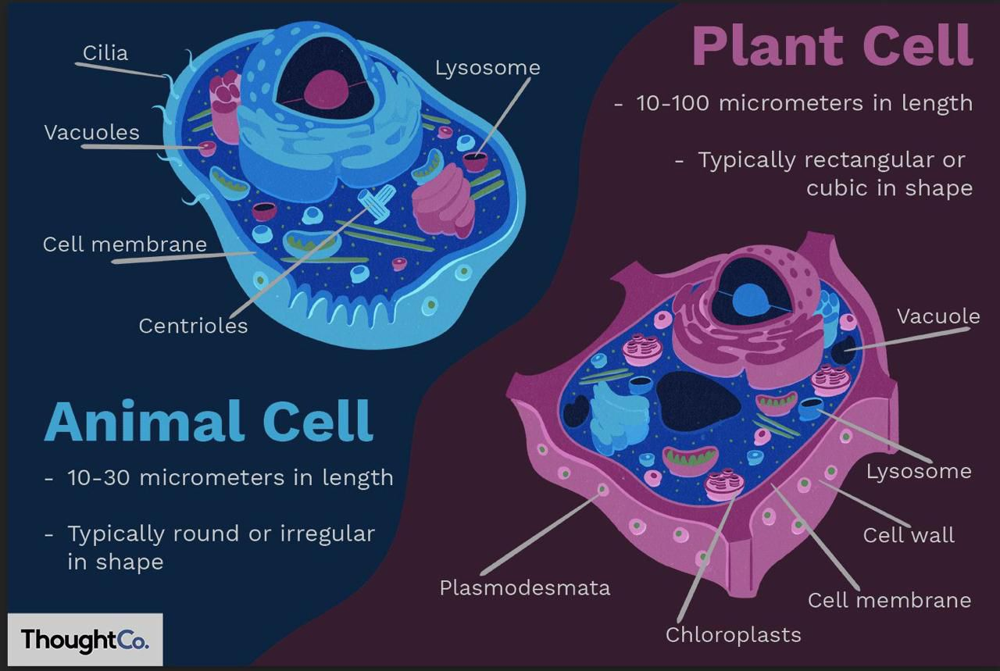

- Both plant and animal cells are eukaryotic cells, but they have a few very important differences.
- While they both respect the basic cell structure (membrane, cytoplasm, nucleus), they have common and specific (not common) organelles and structures. Let's review both of their structures starting from the outside to the inside:
- An animal cell is protected on the exterior by the cell membrane, which has a very important role in intracellular and extracellular substance exchanges. A plant cell also has this cell membrane, however, it is also protected by a second layer on top, called the cell wall (which is thicker in some cells than in others, depending whether or not the secondary cell wall has been formed).
- While the plant cell also has most of the animal cell's organelles (such as ribosomes, mitochondrions, vacuoles), its cytoplasm also contains chloroplasts (green plastids which have a green pigment inside, chlorophyll, which absorbs light for photosynthesis).
- Also, the vacuoles are different in the two types of cells: animal cells have more, smaller vacuoles, while plant cells usually have one big central vacuole, which can occupy up to 90% of the cell.

Written by Bianca Buzas